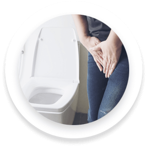

Вам знакомы эти симптомы?

1.
Постоянный дискомфорт и боль внизу живота при мочеиспускании
2.
Неконтролируемые позывы, отсуствие облегчения
3.
Страшно отправиться на прогулку, чихнуть, засмеяться, поднять тяжелое и не удержаться

4.
Ваши постоянные походы в туалет раздражают вас и ваших близких